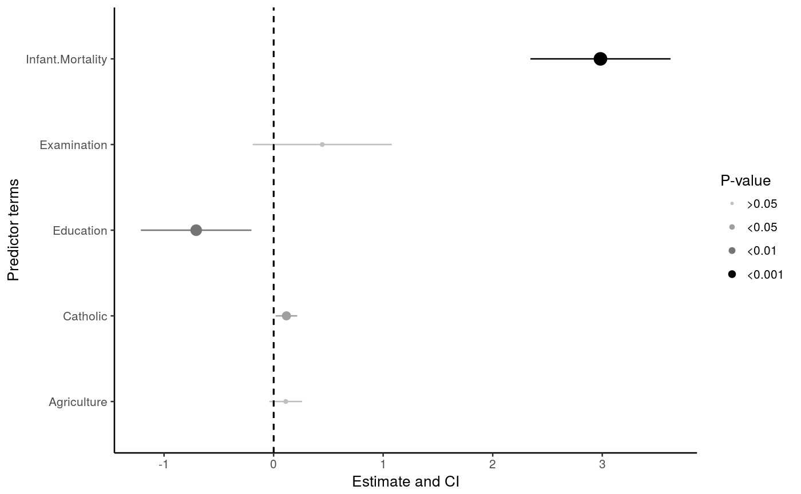
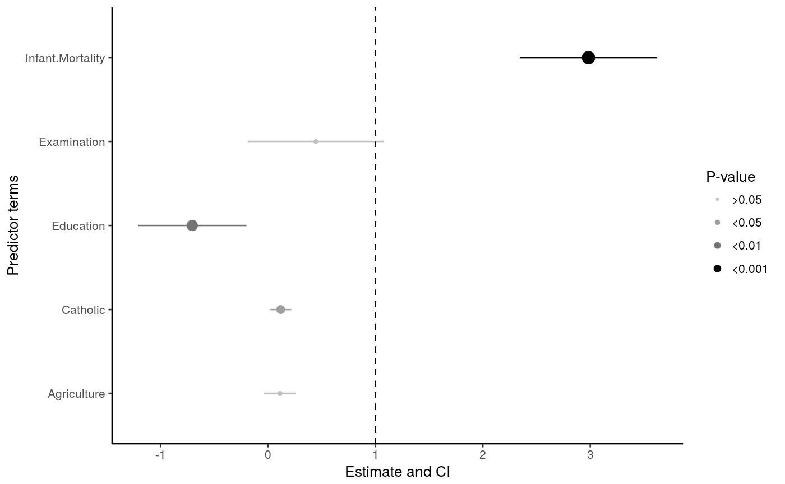
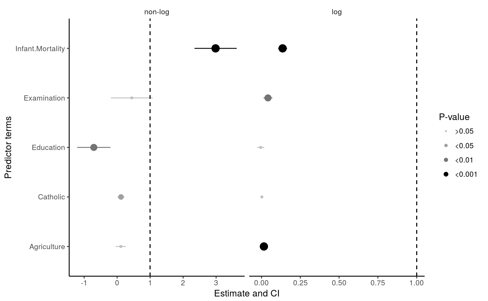

Typical figure for examining estimates and confidence intervals from
regression type analyses. Has standard features for the plot, but if you want
more customization, see the geom_estci function.
view_estci(data, xterms = "term", split_by = NA, ylab = "Predictor terms", xlab = "Estimate and CI", legend.title = "P-value", center.line = 0)
| data | Tidied dataframe from a linear regression, as from the function tidy from the broom package. |
|---|---|
| xterms | Column that contains the predictor variables (ie. "term"). |
| split_by | Column to split the results up by (e.g. different models or different y terms). |
| ylab | Y-axis label. |
| xlab | X-axis label. |
| legend.title | Legend title. |
| center.line | Location for the center line. |
Plot of estimate and confidence interval.
geom_estci
library(broom) fit <- lm(Fertility ~ 0 + Catholic + Agriculture + Examination + Education + Infant.Mortality, data = swiss) fit <- tidy(fit, conf.int = TRUE) fit <- transform(fit, model = "non-log") view_estci(fit, xterms = "term")#> Warning: Using size for a discrete variable is not advised.view_estci(fit, xterms = "term", center.line = 1)#> Warning: Using size for a discrete variable is not advised.fit_log <- lm(log(Fertility) ~ 0 + Catholic + Agriculture + Examination + Education + Infant.Mortality, data = swiss) fit_log <- tidy(fit_log, conf.int = TRUE) fit_log <- transform(fit_log, model = "log") two_fits <- rbind(fit, fit_log) view_estci(two_fits, xterms = "term", split_by = "model", center.line = 1)#> Warning: Using size for a discrete variable is not advised.